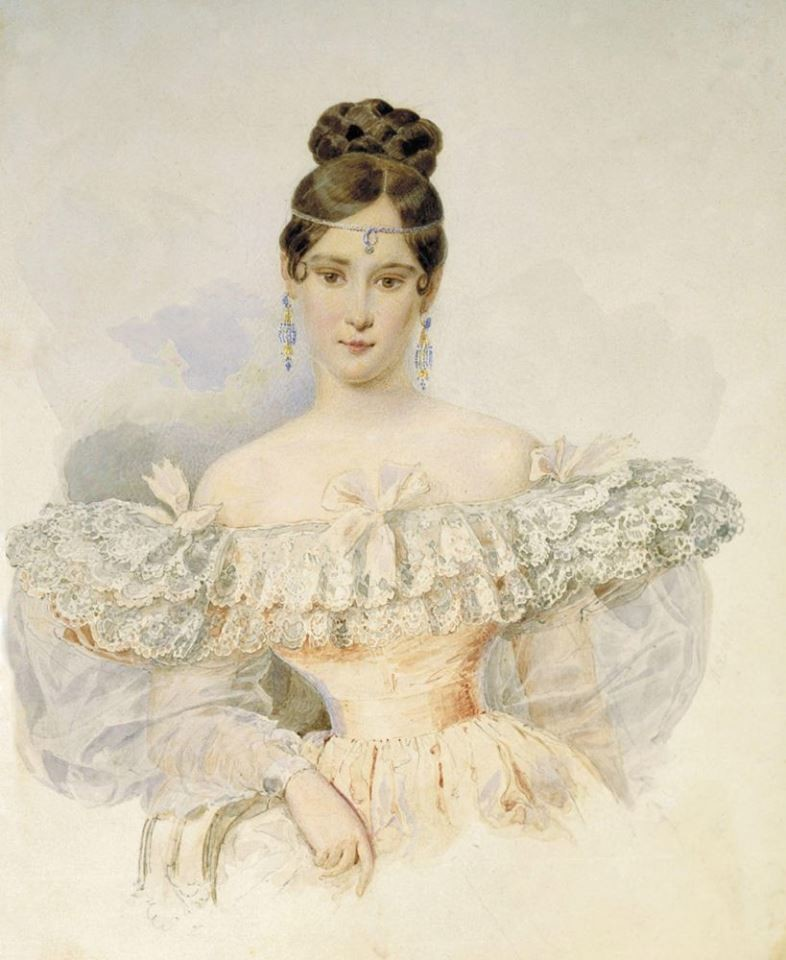

Наталья Пушкина
Село Ильицино стоит на реке Брюкачевка. Первые упоминания о селе были сделаны около середины XVI столетия, тогда Ильицино принадлежало роду Лихаревых. Во второй половине XVIII столетия село перешло роду Гончаровых. Одна из Гончаровых, Екатерина Андреевна приходилась прабабушкой Наталье Гончаровой. Наталья Гончарова своё детство и юность провела в Ильицино. Но на территории усадьбы до наших дней дожила каменная Спасо-Преображенская церковь, построенная в 1786 году. Фрагменты парка с липовыми и еловыми аллеями, прудами напоминают о былом. В советские годы колокольня церкви была разрушена, фамильный склеп Гончаровых также был разорен. Храм был закрыт, а в его здании ремонтировали совхозные трактора, поэтому многое из убранства храма не сохранилось. Сейчас храм восстанавливается.